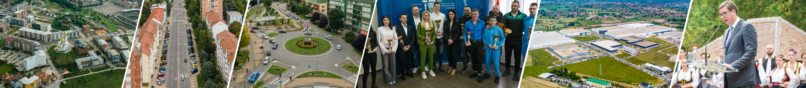

--.--.----
--:--:--

Почетна
Град
О граду
Култура
Симболи града
Туризам
Спорт
Образовање
Информације
Вести
Честа питања
Мапа сајта
Страна за штампу
Галерија
Контакт
Често постављана питања
Где се налази град Лозница?
Лозница се налази у западној Србији, у Подрињу, на обали реке Дрине, у близини границе са Босном и Херцеговином.
Које су најпознатије туристичке дестинације у Лозници?
Најпознатије дестинације су Бања Ковиљача, Тршић, манастир Троноша, планина Гучево и река Дрина.
По коме је Лозница најпознатија?
Лозница је најпознатија као родно место Вука Стефановића Караџића и Јована Цвијића, као и по богатој културној и историјској баштини.
Које манифестације се одржавају у Лозници?
Најпознатије манифестације су Вуков сабор, ЛилаЛо фестивал (лилање), Дринска регата и бројни културни и спортски догађаји током године.
Како могу да контактирам Град Лозницу?
Све контакт информације налазе се на страници
Контакт
, где можете послати поруку путем контакт форме.